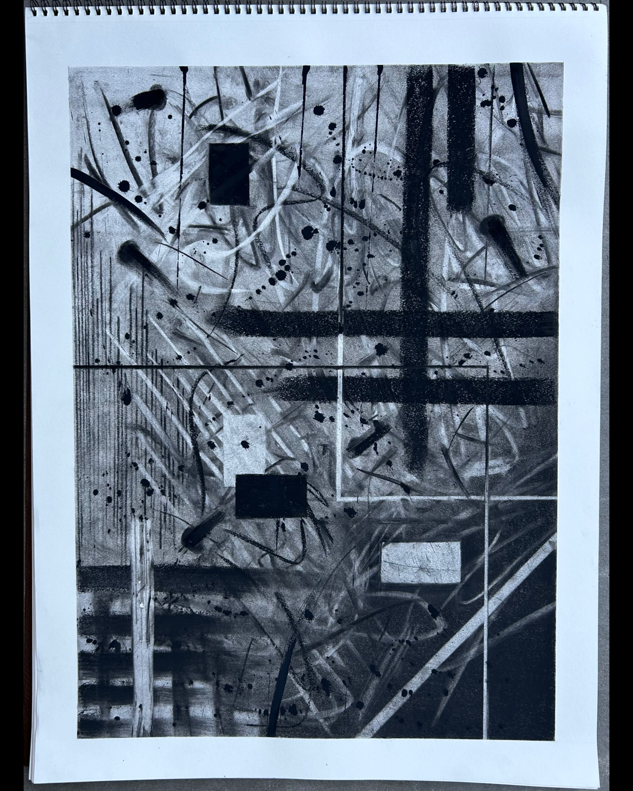

Page 2My Favorite Story Old Man CoyoteTrickster and transformer, powerful and vulnerable, Coyote is a complex
figure in Indian legend. He was often the ultimate example of how not to be:
foolish, proud, self-important. The tales in Old Man Coyote were told by the
Crow Indians of present-day southeastern Montana. During long winter evenings
by the lodge fire, they enjoyed hearing about the only warrior ever to visit
the Bird Country, the Little-people who adopted a lost boy, the two-faced tribe
that gambled for keeps, the marriage of Worm-face, and the origin of the buffalo.
Wandering through these well-spun tales is the irrepressible Old Man Coyote,
sometimes scoring a coup, sometimes getting his comeuppance. My Artwork titled: 29 Not 30
